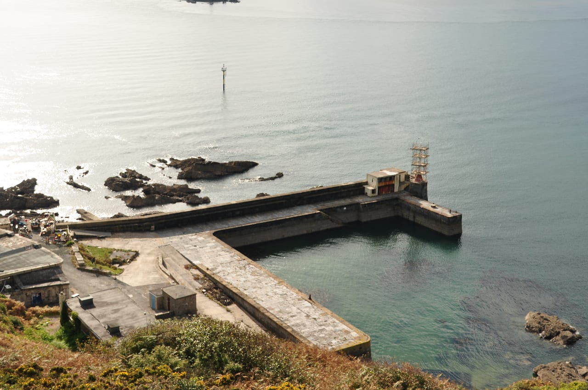
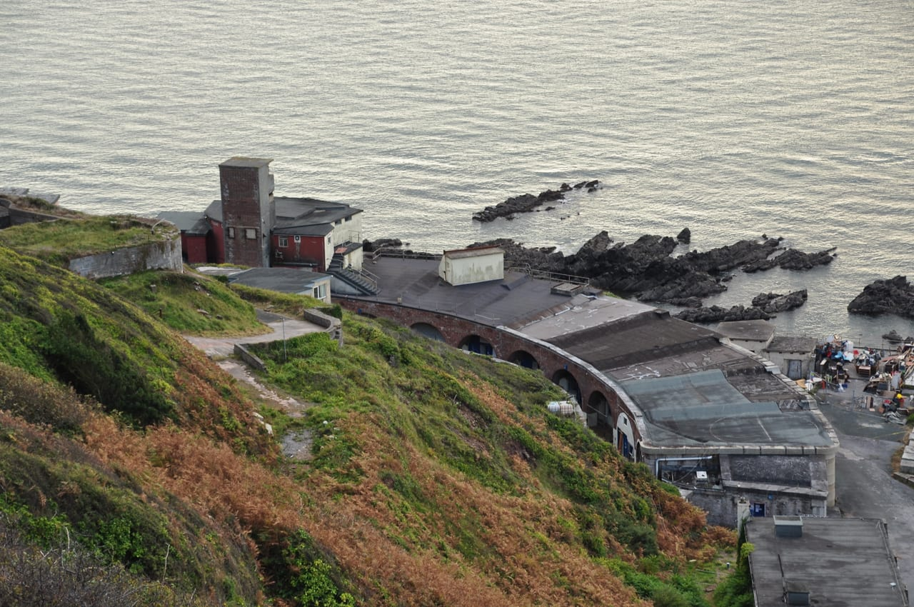

We are designing the working platform for a piling rig during Phase 2 of the harbour redevelopment at Fort Bovisand.
- CASE role
- Temporary works design
- Status
- Ongoing
The package covers the platform for a Comacchio MC800 rig: the rig loading, the construction of the granular platform and the support arrangements for extraction, on a constrained coastal site.


The photographs show the fort and harbour before Phase 2.